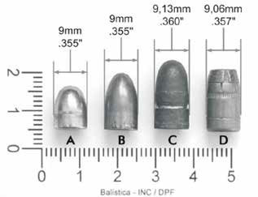

Capítulo 4 - Calibre das Armas e Munição
Índice
2.4 O calibre das armas de fogo e munição
Trata-se de uma referência necessária, pois é comum a certos cartuchos apresentarem uma aparência externa quase idêntica e propriedades balísticas acentuadamente diferentes. (p. 29)
De modo recíproco, muitas armas atuais, concebidas para usar uma munição específica, trazem em si uma referência expressa a respeito do calibre a ser utilizado. (p. 29)
- Os calibres para armas de fogo com almas raiadas (tratado a seguir), o qual consta do calibre real e do calibre nominal;
- O calibre das armas de fogo com almas lisas e suas alterações por meio do choke (tratado na seção 4.5 - Estudo particular da espingarda).
- REAL: medida física do diâmetro interno da alma (em mm)
- NOMINAL: designação do tipo de munição/arma (em frações de polegada ou mm)
2.4.1 Calibre em armas de alma raiada - calibre real
Assim, o calibre real é uma medida exata e aferível, expressa em milímetros, dentro da precisão dos instrumentos de medição. (p. 29)
Medição conforme o número de raias
| Número de raias | Como medir o calibre real |
|---|---|
| PAR | Tarefa simples: dois cheios estarão opostos um ao outro. (p. 30) |
| ÍMPAR | Um cheio estará oposto a uma raia; a medida deve ser tomada entre a superfície de um cheio e a delimitação entre um cheio e uma raia em posição oposta. (p. 30) |
O calibre real é a menor dimensão da alma — medida entre dois cheios (não entre raias). Em raias ímpares, mede-se de um cheio até a borda do cheio oposto.

2.4.2 Calibre em armas de alma raiada - calibre nominal

Assim, todo cartucho de munição apresenta, gravado na base do culote, o calibre nominal de uso. As armas, do mesmo modo, geralmente possuem gravado, no cano ou na lateral do ferrolho, o calibre nominal de munição que utilizam e para o qual foram concebidas. (p. 30)
Comparativo: Calibre Real x Calibre Nominal
| Critério | Calibre REAL | Calibre NOMINAL |
|---|---|---|
| Natureza | Medida física exata e aferível (p. 29) | Designação do tipo de munição/arma (p. 30) |
| Unidade | Milímetros (mm) (p. 29) | Frações de polegada ou milímetros (p. 30) |
| Onde se obtém | Medição na boca do cano (diâmetro interno da alma) (p. 29) | Gravação na base do culote (munição) e no cano ou ferrolho (arma) (p. 30) |
| Correspondência | Um único valor por arma (p. 29) | Diversos calibres nominais para um único calibre real (p. 30) |
Tabela 1 - Munições e calibres nominais (correspondências) (p. 31)
| Calibre Nominal Imperial | Calibre Nominal Métrico |
|---|---|
| .223" Remington | 5,56x45mm OTAN |
| .25" Auto | 6,35mm |
| .308" Winchester | 7,62x51mm OTAN |
| .32" Auto | 7,65mm |
| .380" Auto | 9 mm Curto |
Exemplo de adaptação perigosa
Tal adaptação não leva em conta, entretanto, que um tambor de revólver .38" não possui a resistência necessária para suportar as pressões elevadas de um cartucho .357", o que pode levar a acidentes graves envolvendo a explosão do tambor ou câmara, podendo ferir gravemente o atirador. (p. 31)
- (A) .380" Auto
- (B) 9x19mm
- (C) .38" SPL
- (D) .357" Magnum
2.4.3 Calibre nominal e classificação legal
Baseado nos limites de energia estabelecidos, e considerando a classificação das armas de fogo quanto à alma do cano, modo de funcionamento e à mobilidade, portarias conjuntas do Exército e da Polícia Federal listaram os calibres nominais de uso permitido e restrito. (p. 32)
Classificação Legal das Armas e Munições
| Aspecto | Detalhamento conforme o texto |
|---|---|
| Critério-base | Energia de disparo (p. 32) |
| Categorias legais | Uso PERMITIDO; Uso RESTRITO; OBSOLETAS; PROIBIDAS (p. 32) |
| Norma-matriz | Decreto nº 11.615, de 21 de julho de 2023 (p. 32) |
| Critérios complementares | Alma do cano; modo de funcionamento; mobilidade (p. 32) |
| Listagem dos calibres permitidos/restritos | Portarias conjuntas Exército + Polícia Federal (p. 32) |
Portarias conjuntas que listam os calibres (p. 32)
| Norma | Data |
|---|---|
| PORTARIA CONJUNTA - C EX/DG-PF Nº 2 | 6 de novembro de 2023 |
| PORTARIA CONJUNTA - C EX/DG-PF Nº 3 | 29 de agosto de 2024 |
- BASE: Energia de disparo (Decreto 11.615/2023)
- CATEGORIAS: Permitido / Restrito / Obsoletas / Proibidas
- LISTAS: Portarias Conjuntas C Ex/DG-PF nº 2/2023 e nº 3/2024
- CUIDADO PERICIAL: Cotejar designação do calibre com as tabelas das portarias